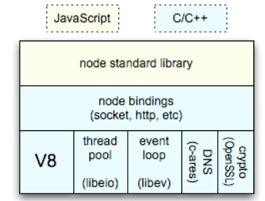
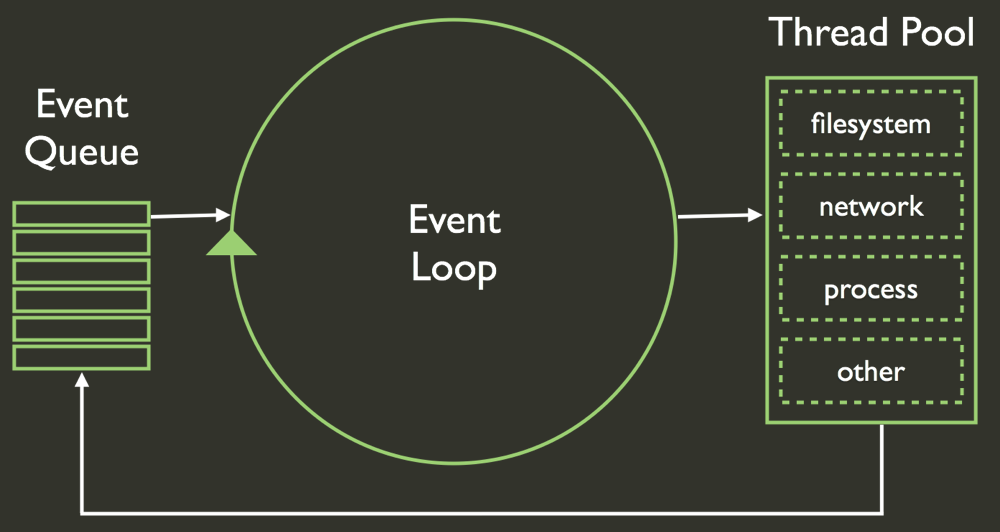
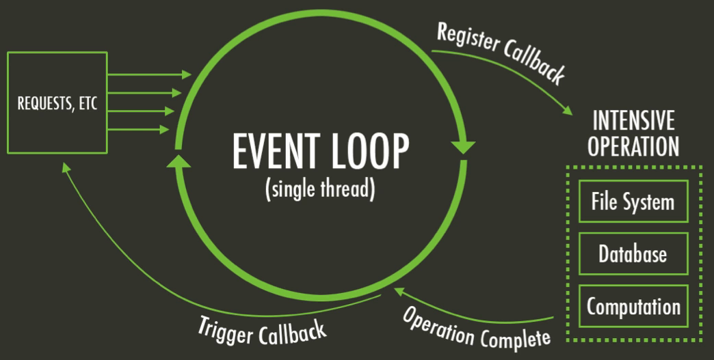
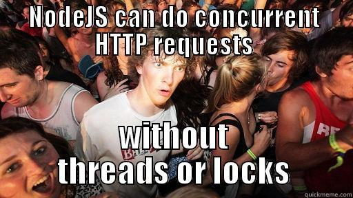
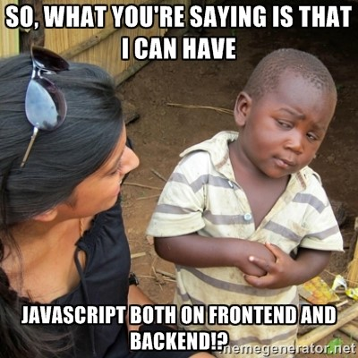

Node.js® is a platform built on Chrome's JavaScript runtime for easily building fast, scalable network applications. Node.js uses an event-driven, non-blocking I/O model that makes it lightweight and efficient, perfect for data-intensive real-time applications that run across distributed devices.
Ideal para aplicaciones que consumen datos en tiempo real y que se ejecutan a través de dispositivos distribuidos
Lo usan muchas empresas (WalMart, Paypal, Yahoo, LinkedIn, eBay, etc.)
Infraestructura

¿Por qué JavaScript?
JavaScript has certain characteristics that make it very different than other dynamic languages, namely that it has no concept of threads. Its model of concurrency is completely based around events
var fs = require("fs");
console.log("\nAbriendo Archivo...");
var content = fs.readFileSync("archivo.txt","utf8");
console.log(content);
console.log("\nHaciendo otra cosa\n");
Abriendo un fichero
Node.JS Non Blocking Code
var fs = require("fs");
console.log("\nAbriendo Archivo...");
var content = fs.readFile("archivo.txt","utf8", function(error,content){
console.log(content);
});
console.log("\nHaciendo otra cosa\n");
¿Cuál es la diferencia?
Callback
Es una pieza de código ejecutable que se pasa como argumento a otro código.
Con la callback estamos logrando un comportamiento asincrónico, es decir, de no bloqueo
El código se ejecuta y no espera a que la lectura se complete, cuando esta termine se imprime el contenido.
var fs = require("fs");
console.log("\nAbriendo Archivo...");
function imprimir(error,content){
console.log(content);
}
var content = fs.readFile("archivo.txt","utf8", imprimir);
console.log("\nHaciendo otra cosa\n");
(también se puede con promesas)
Single Thread
Event Loop

Event Loop

Características de Node.JS
Es concurrente sin paralelismo
Es asíncrono y no bloqueante
Orientado a eventos
Single thread basado en callbacks

Si eres Frontend
Es tu mejor opción para hacer backend por qué ya sabes JavaScript (o deberías
XD
)
Si no te interesa el backend, sus módulos te harán mejor frontend (bower, grunt, gulp, less, browserify, etc.)
Si tu editor de código es brackets ya usas Node.JS
=D
Puedes comenzar tu carrera como Full Stack JavaScript Developer (MEAN.JS o MEAN.IO)
¿Entonces?

¿Qué podemos hacer?
Aplicaciones cliente - servidor
Aplicaciones servidor - servidor (networking)
Chats, Juegos, Clientes de Correo, Traductores
Aplicaciones Colaborativas y Redes Sociales
Estadísticas y Analíticas
Aplicaciones de Red (línea de comandos o admin. de sistemas)